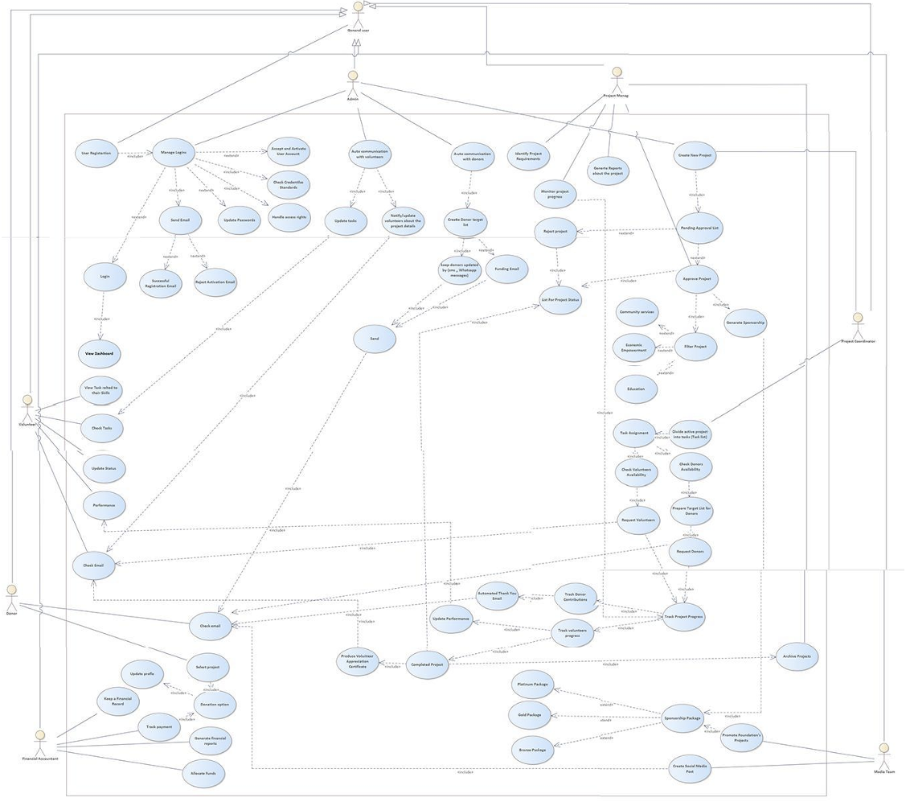
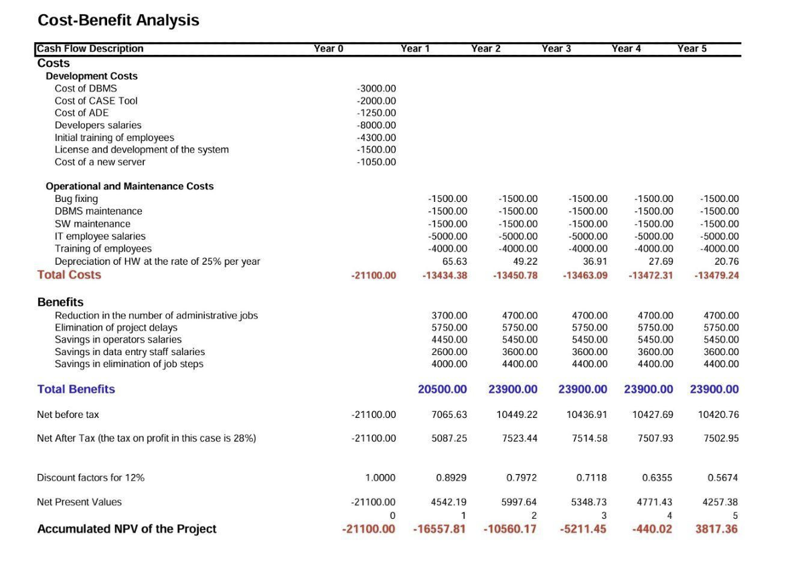
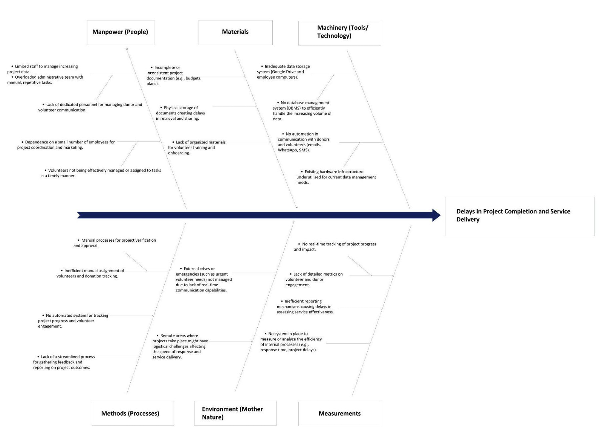
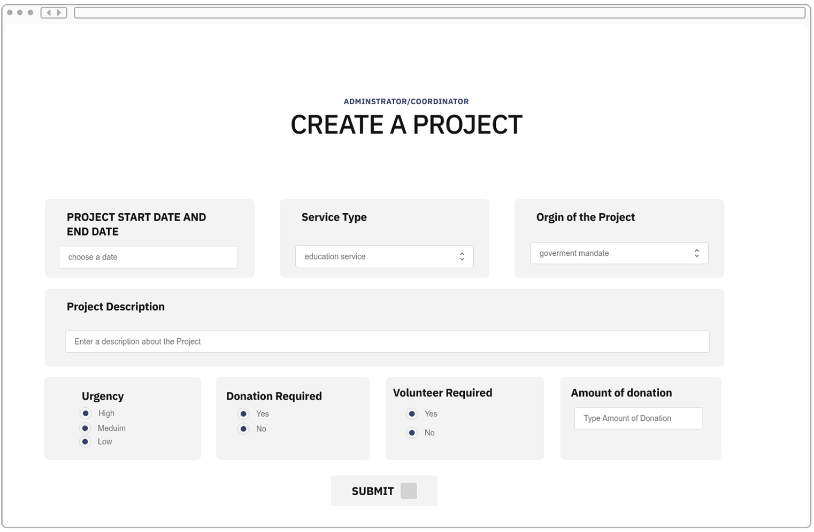

Objective
What the project set out to do
Replace a nonprofit's fragmented record-keeping with one centralized, role-secured portal — and prove the investment case with a real financial model, not just a design mockup.
My Contribution
What I actually built
I led the system analysis, secure data flow planning, and UI design. I built a full system Use Case diagram, detailed registration and volunteer-tracking narratives, and activity/sequence diagrams. I engineered role-based access control to protect stakeholder credentials and ran a five-year Cost/Benefit Analysis calculating Net Present Value and break-even timeline.
Evidence
Documentation on file
A 33-page technical blueprint: full Use Case Model, Ishikawa fishbone diagram, Gantt schedule, 5-year cash-flow graphs, and high-fidelity UI mockups.

Use Case Model diagram
Cost/benefit cash-flow chart
Ishikawa diagram
UI mockup